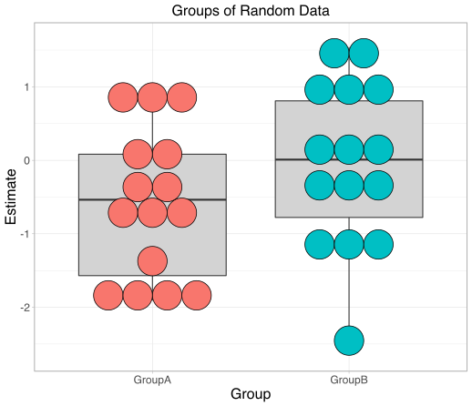
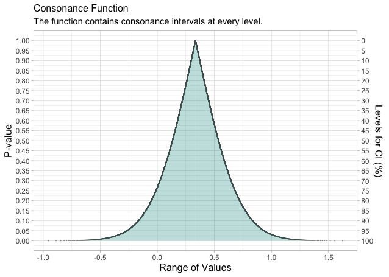
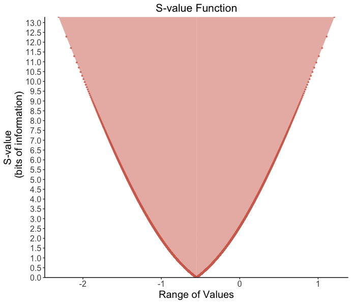
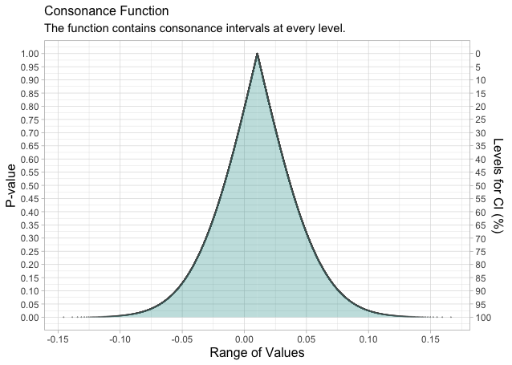
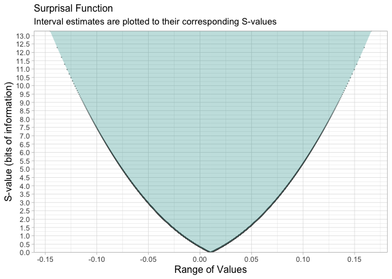
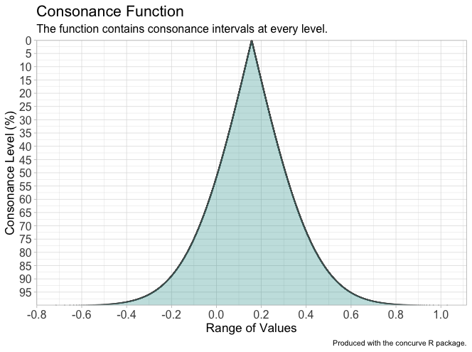

Using Mean Differences
If we were to simulate some random data from a normal distribution with the following code,
and compare the means of these two groups using Welch’s t-test,
we would likely see some differences, given that we have such a small sample in each group. We can graph our data to see what the variability looks like.
Plotted with a dot plot, we would see some variability.

We can see our P-value for the statistical test along with the computed 95% interval (which is given to us by default by the program). Thus, effect sizes that range from the lower bound of this interval to the upper bound are compatible with the test model at this compatibility level.
However, as stated before, a 95% interval is only an artifact of the commonly used 5% alpha level for hypothesis testing and is nowhere near as informative as a function.
If we were to take the information from this data and calculate a P-value function where every single compatibility interval and its corresponding P-value were plotted, we would be able to see the full range of effect sizes compatible with the test model at various levels.
It is relatively easy to produce such a function using the concurve package in R.
Install the concurve package.
We’ll use the same data from above to calculate a P-value function and since we are focusing on mean differences using a t-test, we will use the meanintervals function to calculate our compatibility intervals function and store it in a dataframe.
Now thousands of compatibility intervals at various levels have been stored in the dataframe “intervalsdf.”
We can plot this data using the plotpint function (which stands for plot P-value intervals).

Now we can see every compatibility interval and its corresponding P-value and compatibility level plotted. As stated before, a single 95% compatibility interval is simply a slice through this function, which provides far more information as to what is compatible with the test model and its assumptions.
Furthermore, we can also plot every compatibility interval and its corresponding S-value using the plotsint function

The graph from the code above provides us with compatibility levels and the maximum amount of information against the effect sizes contained in the compatibility interval.
Simple Linear Models
We can also try this with other simple linear models.
Let’s simulate more normal data and fit a simple linear regression to it using ordinary least squares regression with the lm function.
GroupA2<-rnorm(500)
GroupB2<-rnorm(500)
RandomData2<-data.frame(GroupA2, GroupB2)
model<-lm(GroupA2 ~ GroupB2, data=RandomData2)
summary(model)We can see some of the basic statistics of our model including the 95% interval for our predictor (GroupB). Perhaps we want more information. Well we can do that! Using the geninterval function in the concurve package, we can calculate several compatibility intervals for the regression coefficient and then plot the P-value and S-value functions.


We can also compare these functions to likelihood functions (also called support intervals), and we’ll see that we get very similar results. We’ll do this using the ProfileLikelihood package.
xx <- profilelike.lm(formula = GroupA2 ~ 1, data=RandomData2,
profile.theta="GroupB2",
lo.theta=-0.3, hi.theta=0.3, length=500)Now we plot our likelihood function and we can see what the maximum likelihood estimation is. Notice that it’s practically similar to the interval in the S-value function with 0 bits of information against it and and the compatibility interval in the P-value function with a P-value of 1.
profilelike.plot(theta=xx$theta,
profile.lik.norm=xx$profile.lik.norm, round=3)
title(main = "Likelihood Function")
We’ve used a relatively easy example for this blog post, but the concurve package is also able to calculate compatibility functions for multiple regressions, logistic regressions, ANOVAs, and meta-analyses (that have been produced by the metafor package).
Using Meta-Analysis Data
Here we present another quick example with a meta-analysis of simulated data.
First, we simulate random data for two groups in two hypothetical studies
GroupAData<-runif(20, min=0, max=100)
GroupAMean<-round(mean(GroupAData), digits=2)
GroupASD<-round(sd(GroupAData), digits=2)
GroupBData<-runif(20, min=0, max=100)
GroupBMean<-round(mean(GroupBData), digits=2)
GroupBSD<-round(sd(GroupBData), digits=2)
GroupCData<-runif(20, min=0, max=100)
GroupCMean<-round(mean(GroupCData), digits=2)
GroupCSD<-round(sd(GroupCData), digits=2)
GroupDData<-runif(20, min=0, max=100)
GroupDMean<-round(mean(GroupDData), digits=2)
GroupDSD<-round(sd(GroupDData), digits=2)We can then quickly combine the data in a dataframe.
StudyName<-c("Study1", "Study2")
MeanTreatment<-c(GroupAMean, GroupCMean)
MeanControl<-c(GroupBMean, GroupDMean)
SDTreatment<-c(GroupASD, GroupCSD)
SDControl<-c(GroupBSD, GroupDSD)
NTreatment<-c(20,20)
NControl<-c(20,20)
metadf<-data.frame(StudyName, MeanTreatment, MeanControl,
SDTreatment, SDControl,
NTreatment, NControl)Then, we’ll use metafor to calculate the standardized mean difference.
dat<-escalc(measure="SMD",
m1i=MeanTreatment, sd1i=SDTreatment, n1i=NTreatment,
m2i=MeanControl, sd2i=SDControl, n2i=NControl,
data=metadf)Next, we’ll pool the data using a fixed-effects common-effects model
Let’s plot our results in a forest plot. I’m going to omit this code since it’s a bit long.

Take a look at the pooled summary effect and its interval. Keep it in mind as we move onto constructing a compatibility function.
We can now take the object produced by the meta-analysis and calculate a P-value and S-value function with it to see the full spectrum of effect sizes compatible with the test model at every level. We’ll use the metainterval function to do this.
Now that we have our dataframe with every computed interval, we can plot the functions.

And our S-value function
Compare the span of these functions and the information they provide to the compatibility interval provided by the forest plot. We are now no longer limited to interpreting an arbitrarily chosen interval by mindless analytic decisions often built into statistical packages by default.